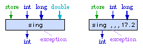

Electrical FireDesignPrimitive Graph FormatData LayerPrimitives |
|
This page contains precise descriptions of all primitives available in the primitive graph format.
In the table of primitives below the primitives are written in a form such as A, B = op.¤ C, D, E. This notation represents a data graph node op with variant ¤, outputs A and B, and inputs C, D, and E. Order of the inputs is significant.
Inputs can be either constants or incoming data edges. Outputs can be either outgoing data edges or the special symbol E that indicates that the primitive may throw an exception. A primitive can have at most one outgoing data edge output and at most one E output. To specify which inputs and outputs are legal for a particular primitive we use one of the syntactic domains below in the pattern which describes the primitive.
To illustrate, suppose that we have a fictional primitive with the pattern
Vi, E = sing M, Vi,
Vl, Ad. Then either of these nodes would be a valid
use of this primitive; note that the two Vi's are independent
and do not necessarily refer to the same variable.

Many primitives have several different variants for different kinds of inputs and outputs. We indicate which variant of the primitive we want by using the variant suffix of the primitive.
The following domains describe the categories of inputs and outputs in the primitive descriptions:
Name |
Contents |
|---|---|
| X | Y | an element of domain X or an element of domain Y |
| Ci | 32-bit int constant |
| Cl | 64-bit long constant |
| Cf | single-precision floating-point constant |
| Cd | double-precision floating-point constant |
| Ca | nil, pointer constant, or object reference constant |
| Cc | condition constant less, equal, greater, or unordered |
| © | constant memory region; this input indicates that no incoming memory edge is necessary because the value being read from memory is immutable |
| C¤ | one of Ci, Cl, Cf, Cd, Ca, or Cc depending on variant ¤ |
| C@ | one of Ci, Cl, Cf, Cd, or Ca; two different C@ inputs may have different kinds |
| Vi | int edge (32-bit integer local variable) |
| Vl | long edge (64-bit integer local variable) |
| Vf | single float edge (32-bit floating-point local variable) |
| Vd | double float edge (64-bit floating-point local variable) |
| Va | address edge (object reference or pointer local variable) |
| Vc | condition edge (four-state local variable, often held in a processor's condition codes) |
| M | memory edge |
| V¤ | one of Vi, Vl, Vf, Vd, Va, Vc, or M depending on variant ¤ |
| V@ | one of Vi, Vl, Vf, Vd, or Va; two different V@ inputs or outputs may have different kinds |
| Ai | Ci | Vi (32-bit integer constant or local variable) |
| Al | Cl | Vl (64-bit integer constant or local variable) |
| Af | Cf | Vf (32-bit floating-point constant or local variable) |
| Ad | Cd | Vd (64-bit floating-point constant or local variable) |
| Aa | Ca | Va (object reference constant or local variable) |
| Ac | Cc | Vc (condition constant or local variable) |
| M© | M | © (memory edge or constant memory region) |
| A¤ | one of Ai, Al, Af, Ad, Aa, or Ac depending on variant ¤ |
| A@ | one of Ai, Al, Af, Ad, or Aa; two different A@ inputs may have different kinds |
| T<X, Y, Z> | tuple edge carrying an element of domain
X as component 0, an element of domain Y as component 1, and an
element of domain Z as component 2. The number of components can vary, and
some can be missing.
For example, T<, Vi, Vl> has no component 0, carries an int edge
as component 1, and carries a long edge as component 2. |
| E | If an E is present as an output of a primitive, it indicates that the primitive may produce an exception, so it has to be connected to an exception node or throw node. |
As an additional restriction, no primitive is allowed to have inputs
consisting entirely of constants, even if the above domains would otherwise
allow it. In other words, at least one input of every primitive must be a
variable or memory edge. For example,
Vi = Add.i 3, 5
is not legal, while
Vi = Ld.i M, 0x20000
is legal. A phi node is not a primitive, so this restriction does not
apply to phi nodes.
Many primitives have different variants for different kinds of inputs and outputs. We identify a particular variant by annotating the primitive with a variant letter. The following letters designate the variants in the table of primitives below:
Variant |
Description |
|---|---|
- |
none |
|
8-bit byte |
|
16-bit halfword |
|
32-bit integer word (int) |
|
64-bit integer word (long) |
|
32-bit floating-point number (float) |
|
64-bit floating-point number (double) |
|
address; usually 32 bits, but may be 64 bits on some machines |
|
condition |
|
memory state |
|
tuple |
Note that the variant is not the same as the primitive's kind listed in
the primitive's data structure. A primitive's kind is defined to be the kind of the primitive's
output edge (or void if none), which is not necessarily the same as the
primitive's variant. Variants are simply a shorthand to reduce the size of
the table describing the primitives on this page.
The fourteen nontrivial conditionals cond are named
and listed in the table below. For each conditional cond the table
lists the result of cond(c) for each of the four possible
conditions c (less, equal, greater,
or unordered).
cond |
less |
equal |
greater |
unordered |
|---|---|---|---|---|
| Lt | 1 |
0 |
0 |
0 |
| Eq | 0 |
1 |
0 |
0 |
| Le | 1 |
1 |
0 |
0 |
| Gt | 0 |
0 |
1 |
0 |
| Lgt | 1 |
0 |
1 |
0 |
| Ge | 0 |
1 |
1 |
0 |
| Ord | 1 |
1 |
1 |
0 |
| Unord | 0 |
0 |
0 |
1 |
| ULt | 1 |
0 |
0 |
1 |
| UEq | 0 |
1 |
0 |
1 |
| ULe | 1 |
1 |
0 |
1 |
| UGt | 0 |
0 |
1 |
1 |
| Ne | 1 |
0 |
1 |
1 |
| UGe | 0 |
1 |
1 |
1 |
There are also several three-way conditionals cond3 that produce one of
three integer results -1, 0, or 1. For each three-way conditional cond3 the table
below lists the result of cond3(c) for each of the four possible
conditions c (less, equal, greater,
or unordered).
cond3 |
less |
equal |
greater |
unordered |
|---|---|---|---|---|
| CatL | -1 |
0 |
1 |
-1 |
| CatG | -1 |
0 |
1 |
1 |
| CatCL | 1 |
0 |
-1 |
-1 |
| CatCG | 1 |
0 |
-1 |
1 |
The table of primitives uses the following notation:
A:B |
A 64-bit number whose high 32 bits are A and low 32 bits are B. |
extu(A) |
A zero-extended to whatever precision the context of extu(A) needs. |
exts(A) |
A sign-extended to whatever precision the context of exts(A) needs. |
A /U B |
Unsigned division of A by B; both A and B are interpreted as unsigned integers. The exact mathematical quotient is rounded down to the nearest integer. The result is undefined if B is zero. |
A /S B |
Signed division of A by B; both A and B> are interpreted as signed integers. The exact mathematical quotient is rounded towards zero to the nearest integer. As a special case, if A is the largest negative number representable in A's precision and B is -1, then the result is equal to A (see [GJS96], page 352). The result is undefined if B is zero. |
A %U B |
Unsigned remainder of A divided by B; both A and B are interpreted as unsigned integers. The remainder satisfies the identity (A /U B) * B + (A %U B) = A. The result is undefined if B is zero. |
A %S B |
Signed remainder of A divided by B; both A and B are interpreted as signed integers. The remainder satisfies the identity (A /S B) * B + (A %S B) = A. The result is undefined if B is zero. |
A ? B |
Return one of four possible conditions depending on the relative magnitudes
of numbers A and B. Return less if A
< B, equal if A = B, greater
if A > B, or unordered if either A
or B is a floating-point NaN. |
A ?U B |
Same as A ? B, but treating integers as unsigned. |
A ?S B |
Same as A ? B, but treating integers as signed. |
Below are the patterns for all primitives. Primitives in red are not available on all machines and are marked with one of the following symbols:
† |
This primitive is supported only if the target architecture has an appropriate trap instruction. If not, this primitive will be converted to a conditional branch after optimization but before instruction generation. |
® |
This primitive is supported only if the target architecture protects memory around address 0 from read or write accesses. |
Primitive |
Patterns |
Variants ¤ |
Action |
Description |
|---|---|---|---|---|
| General | ||||
Const |
V¤ = Const.¤
C¤ |
i, l, f, d, a, c |
V¤ := C¤ | Constant variable (rarely used except as an input to a phi node because most primitives allow constants directly as their inputs) |
Proj |
V¤ = Proj.¤
T, n |
i, l, f, d, a, c, m |
V¤ := T[n] | Extraction (projection) of the nth component of tuple T.
That component must exist and must have kind V¤. Memory components may be stored at index n=0 only.
This primitive must be located inside the same control node as the node that creates the tuple T. |
| Debugging | ||||
Debug |
M1 = Debug M2, A@1, ..., A@n |
- | Debugger checkpoint | Potential place to stop the function and examine its variables when debugging.
The state of local variables is provided in the inputs. |
Break |
M1 = Break M2, A@1, ..., A@n |
- | Breakpoint | A point where execution should stop when debugging.
The state of local variables is provided in the inputs. |
| Arguments and Results | ||||
Arg |
V¤ = Arg.¤
n |
i, l, f, d, a |
V¤ := nth argument | Incoming function argument or memory state reference.
The arguments are numbered starting from 0. If this is a dynamic method, the first argument is the this pointer.
This primitive can only be located inside a begin node. |
M = Arg.m |
m |
M := entry memory state | ||
Result |
Result.¤
n, V¤ |
i, l, f, d, a |
nth result := V¤ | Outgoing result reference.
The results are numbered starting from 0. A void function has no results; all other Java functions have one result.
This primitive can only be located inside a return node. |
Result.m
M |
m |
exit memory state := M | Outgoing memory state reference. This primitive can only be located inside an
end node. | |
| Flow Control | ||||
Ifcond |
Ifcond
Vc, Bfalse, Btrue |
- |
If cond(Vc) goto Btrue else goto Bfalse |
Branch to control node Btrue if the condition Vc satisfies the conditional cond;
branch to Bfalse if not. See the
table of conditionals for the interpretation of cond.
This primitive is actually part of an if node. |
Switch |
Switch Vi,B0, B1, ..., Bn-1 |
- |
If Vi=0 goto B0 else if Vi=1 goto B1 else ... else if Vi=n-1 goto Bn-1 |
Branch to one of n control nodes Bk depending on the value of
the index Vi. Vi is guaranteed to be between 0 and n-1, inclusive.
This primitive is actually part of a switch node. |
Catch |
Va = Catch.a |
a |
Va := thrown exception | Get value of exception just caught by this handler.
This primitive can only be located inside a catch node. |
| Scalar Arithmetic and Logical | ||||
And |
V¤1 = And.¤
V¤2, A¤3 |
i, l |
V¤1 := V¤2 & A¤3 | Bitwise AND |
Or |
V¤1 = Or.¤
V¤2, A¤3 |
i, l |
V¤1 := V¤2 | A¤3 | Bitwise OR |
Xor |
V¤1 = Xor.¤
V¤2, A¤3 |
i, l |
V¤1 := V¤2 ^ A¤3 | Bitwise exclusive OR |
Add |
Vi1 = Add.i
Vi2, Ai3 |
i |
Vi1 := (Vi2 + Ai3) mod 232 | Int addition |
Vl1 = Add.l
Vl2, Al3 |
l |
Vl1 := (Vl2 + Al3) mod 264 | Long addition | |
Va1 = Add.a
Aa2, Ai3 |
a |
Va1 := Aa2 + exts(Ai3) | Address addition. Like in ANSI C, the source address and the result
address must point to the same object. The signed or unsigned extend is explicit because addresses might
be longer than 32 bits. | |
Va1 = AddU.a
Aa2, Ai3 |
a |
Va1 := Aa2 + extu(Ai3) | ||
Sub |
Vi1 = Sub.i
Ai2, Vi3 |
i |
Vi1 := (Ai2 - Vi3) mod 232 | Int subtraction |
Vl1 = Sub.l
Al2, Vl3 |
l |
Vl1 := (Al2 - Vl3) mod 264 | Long subtraction | |
Va1 = Sub.a
Aa2, Vi |
a |
Va1 := Aa2 - exts(Vi) | Address subtraction. The source address and the result address must point to the same object. The extend is explicit because addresses might be longer than 32 bits. | |
Va1 = SubU.a
Aa2, Vi |
a |
Va1 := Aa2 - extu(Vi) | ||
Vi = SubA.i
Aa2, Aa3 |
i |
Vi := (Aa2 - Aa3) mod 232 |
Address difference. Both source addresses must point to the same object. | |
Mul |
Vi1 = Mul.i
Vi2, Ai3 |
i |
Vi1 := (Vi2 × Ai3) mod 232 | Int multiplication |
Vl1 = Mul.l
Vl2, Al3 |
l |
Vl1 := (Vl2 × Al3) mod 264 |
Long multiplication | |
Div |
V¤1 = Div.¤
A¤2, A¤3 |
i, l |
V¤1 := A¤2 /S A¤3 | Signed or unsigned integer division, rounding towards zero.
Dividing by zero writes an undefined value into V¤1 and throws ArithmeticException.
The divisor is guaranteed not to be zero in Div and DivU. |
V¤1, E = DivE.¤ A¤2, V¤3 |
i, l |
V¤1 := A¤2 /S V¤3; throw if V¤3 = 0 | ||
V¤1 = DivU.¤
A¤2, A¤3 |
i, l |
V¤1 := A¤2 /U A¤3 | ||
V¤1, E = DivUE.¤ A¤2, V¤3 |
i, l |
V¤1 := A¤2 /U V¤3; throw if V¤3 = 0 | ||
Mod |
V¤1 = Mod.¤
A¤2, A¤3 |
i, l |
V¤1 := A¤2 %S A¤3 | Signed or unsigned integer modulo, rounding towards zero.
Dividing by zero writes an undefined value into V¤1 and throws ArithmeticException.
The divisor is guaranteed not to be zero in Mod and ModU. |
V¤1, E = ModE.¤ A¤2, V¤3 |
i, l |
V¤1 := A¤2 %S V¤3; throw if V¤3 = 0 | ||
V¤1 = ModU.¤
A¤2, A¤3 |
i, l |
V¤1 := A¤2 %U A¤3 | ||
V¤1, E = ModUE.¤ A¤2, V¤3 |
i, l |
V¤1 := A¤2 %U V¤3; throw if V¤3 = 0 | ||
Shl |
Vi1 = Shl.i
Ai2, Ai3 |
i |
Vi1 := (Ai2 << (Ai3 mod 32)) mod 232 |
Int logical shift left |
Vl1 = Shl.l
Al2, Ai |
l |
Vl1 := (Al2 << (Ai mod 64)) mod 264 |
Long logical shift left | |
Shr |
Vi1 = Shr.i
Ai2, Ai3 |
i |
Vi1 := Ai2 >>S (Ai3 mod 32) | Int arithmetical shift right |
Vl1 = Shr.l
Al2, Ai |
l |
Vl1 := Al2 >>S (Ai mod 64) | Long arithmetical shift right | |
Vi1 = ShrU.i
Ai2, Ai3 |
i |
Vi1 := Ai2 >>U (Ai3 mod 32) | Int logical shift right | |
Vl1 = ShrU.l
Al2, Ai |
l |
Vl1 := Al2 >>U (Ai mod 64) |
Long logical shift right | |
Ext |
V¤1 = Ext.¤
V¤2, Ci |
i, l |
V¤1 := exts(V¤2 mod 2Ci) | Signed right-aligned field extraction (1 <= Ci <= 31 or 63) |
| Floating Point Arithmetic | ||||
FAdd |
V¤1 = FAdd.¤
V¤2, A¤3 |
f, d |
V¤1 := V¤2 + A¤3 | Floating point addition (no exceptions) |
FSub |
V¤1 = FSub.¤
A¤2, V¤3 |
f, d |
V¤1 := A¤2 - V¤3 | Floating point subtraction (no exceptions) |
FMul |
V¤1 = FMul.¤
V¤2, A¤3 |
f, d |
V¤1 := V¤2 × A¤3 | Floating point multiplication (no exceptions) |
FDiv |
V¤1 = FDiv.¤
A¤2, A¤3 |
f, d |
V¤1 := A¤2 ÷ A¤3 | Floating point division (no exceptions) |
FRem |
V¤1 = FRem.¤
A¤2, A¤3 |
f, d |
V¤1 := A¤2 rem A¤3 | Java-style floating point remainder (no exceptions); see [GJS96], page 354 |
| Conversion | ||||
Conv |
Vi = ConvI.l
Vl |
l |
Vi := Vl mod 232 | Long-to-int conversion |
Vl = ConvL.i
Vi |
i |
Vl := exts(Vi) | Int-to-long signed extension | |
FConv |
Vi = FConvI.¤
V¤ |
f, d |
Vi := (int)V¤ | Floating-point conversions, rounding and pinning at minimum or maximum representable values as necessary.
NaNs converted into integers become zeros. |
Vl = FConvL.¤
V¤ |
f, d |
Vl := (long)V¤ | ||
Vf = FConvF.¤
V¤ |
i, l, d |
Vf := (float)V¤ | ||
Vd = FConvD.¤
V¤ |
i, l, f |
Vd := (double)V¤ | ||
| Comparison | ||||
Cmp |
Vc = Cmp.¤
V¤2, A¤3 |
i, l |
Vc := V¤2 ?S A¤3 | Signed or unsigned integer comparison, yielding one of three possible conditions
less, equal, or greater |
Vc = CmpU.¤
V¤2, A¤3 |
i, l, a |
Vc := V¤2 ?U A¤3 | ||
FCmp |
Vc = FCmp.¤
V¤2, A¤3 |
f, d |
Vc := V¤2 ? A¤3 |
Floating point comparison (no exceptions), yielding one of four possible conditions
less, equal, greater, or unordered |
cond |
Vi = cond.i
Vc |
i |
Vi := cond(Vc) | Return 1 if the condition Vc satisfies the conditional cond or 0 if not. See the
table of conditionals for the interpretation of cond. |
cond3 |
Vi = cond3.i
Vc |
i |
Vi := cond3(Vc) | Return -1, 0, or 1 depending on how the three-way conditional cond3 deals with condition Vc. See the
table of three-way conditionals. |
ChkNull |
E = ChkNull.a Va |
† a |
throw if Va = 0 |
Null pointer check: throw NullPointerException if Va is null. |
ChkCast |
E = ChkCast.¤V¤1, A¤2 |
† i, a |
throw if V¤1 != A¤2 | Type check: throw ClassCastException if
the two integers or pointers are different. |
Limit |
E = Limit.i
Ai1, Ai2 |
† i |
throw if Ai1 >=U Ai2 | Array range check: throw ArrayIndexOutOfBounds if the index is out of range
(using an unsigned comparison). |
LimCast |
E = LimCastI.iVi1, Ci2 |
† i |
throw if Vi1 < Ci2 |
Type check: throw ClassCastException if Vi1
is less than Ci2;
the comparison can be either signed or unsigned at the implementation's discretion. |
| Memory | ||||
Ld |
V¤ = Ld.¤
M©, Aa |
i, l, f, d, a |
V¤ := *Aa | Load value (Ld), signed byte or halfword (LdS), or
unsigned byte or halfword (LdU) from memory.
The address is guaranteed to be aligned on a natural boundary for the value being loaded.
LdE, LdSE, and LdUE throw NullPointerException if Va points to
MMU-protected memory. |
V¤, E = LdE.¤
M©, Va |
® i, l, f, d, a |
throw if Va protected; V¤ := *Va | ||
Vi = LdS.¤
M©, Aa |
b, h |
Vi := exts(*Aa) | ||
Vi, E = LdSE.¤
M©, Va |
® b, h |
throw if Va protected; Vi := exts(*Va) | ||
Vi = LdU.¤
M©, Aa |
b, h |
Vi := extu(*Aa) | ||
Vi, E = LdUE.¤
M©, Va |
® b, h |
throw if Va protected; Vi := extu(*Va) | ||
T<M1, V¤> = LdV.¤ M2, Aa |
i, l, f, d, a |
V¤ := *Aa | Load value (LdV), signed byte or halfword (LdVS), or
unsigned byte or halfword (LdVU) from volatile memory.
The address is guaranteed to be aligned on a natural boundary for the value being loaded.
LdVE, LdVSE, and LdVUE throw NullPointerException if Va points to
MMU-protected memory. | |
T<M1, V¤>, E = LdVE.¤ M2, Va |
® i, l, f, d, a |
throw if Va protected; V¤ := *Va | ||
T<M1, Vi> = LdVS.¤ M2, Aa |
b, h |
Vi := exts(*Aa) | ||
T<M1, Vi>, E = LdVSE.¤ M2, Va |
® b, h |
throw if Va protected; Vi := exts(*Va) | ||
T<M1, Vi> = LdVU.¤ M2, Aa |
b, h |
Vi := extu(*Aa) | ||
T<M1, Vi>, E = LdVUE.¤ M2, Va |
® b, h |
throw if Va protected; Vi := extu(*Va) | ||
St |
M1 = St.¤
M2, Aa, A¤ |
b, h, i, l, f, d, a |
*Aa := A¤ | Store value into memory.
The address is guaranteed to be aligned on a natural boundary for the value being stored.
StE throws NullPointerException if Va points to
MMU-protected memory. |
M1, E = StE.¤M2, Va, A¤ |
® b,h,i,l,f,d,a |
throw if Va protected; *Va := A¤ | ||
M1 = StV.¤
M2, Aa, A¤ |
b, h, i, l, f, d, a |
*Aa := A¤ | Store value into volatile memory.
The address is guaranteed to be aligned on a natural boundary for the value being stored.
StVE throws NullPointerException if Va points to
MMU-protected memory. | |
M1, E = StVE.¤M2, Va, A¤ |
® b,h,i,l,f,d,a |
throw if Va protected; *Va := A¤ | ||
MEnter |
M1, E = MEnterM2, Aa, Ci |
- | Acquire monitor | Acquire the monitor of object Aa. If there is contention for the object, periodically
check for asynchronous exceptions and throw any such exceptions that may arise. If MEnter throws
an exception, the object's monitor is not acquired. Aa is guaranteed to be non-null.
Ci is the index of a stack slot that this MEnter can use to communicate with the matching MExit
primitive or primitives.
One of the matching MExits is guaranteed to execute exactly once even if synchronous or asynchronous exceptions occur (including
this thread being stopped) unless the current thread is destroyed with Thread.destroy.
No other MEnter or MExit with the same slot number can execute in the interim in this function. |
MExit |
M1 = MExitM2, Aa, Ci |
- | Release monitor | Release the monitor of object Aa. Aa is guaranteed to be non-null.
Ci is the index of a stack slot set up by a matching MEnter that previously acquired the monitor of the same object Aa.
Each MExit is guaranteed to match one MEnter, so the current thread is guaranteed to own the monitor. |
Sync |
M1 = Sync
M2 |
- | Memory synchronization | Ensure that all previous memory reads and writes have completed before any subsequent memory reads or writes
can begin. This has the same semantic effect as but is faster than calling a MEnter/MExit pair on a monitor that
this thread already owns. |
| Calls | ||||
SysCall |
T<, V@1, ..., V@m>
= SysCall routine,
M, A@1, ..., A@n |
System call | Perform a system call, passing arguments and retrieving results.
Three varieties of SysCall are provided depending on whether the system call is pure (SysCallC),
reads non-constant memory (SysCall), or modifies memory (SysCallV). | |
T<M1,
V@1, ..., V@m>
= SysCallV routine,
M2, A@1, ..., A@n |
Volatile system call | |||
T<, V@1, ..., V@m>
= SysCallC routine,
A@1, ..., A@n |
Constant system call | |||
T<, V@1, ..., V@m>, E
= SysCallE routine,
M, A@1, ..., A@n |
System call with exceptions |
Same as above, but able to raise exceptions. | ||
T<M1,
V@1, ..., V@m>, E
= SysCallEV routine,
M2, A@1, ..., A@n |
Volatile system call with exceptions | |||
T<, V@1, ..., V@m>, E
= SysCallEC routine,
A@1, ..., A@n |
Constant system call with exceptions | |||
Call |
T<M1,
V@1, ..., V@m>, E = Call M2, Aa, A@1, ..., A@n |
Function call | Call function Aa, passing arguments and retrieving results. | |
The following calls can be made using the SysCall primitives:
T<>, E = SysCallEC Throw,
Aa |
Throw exception Aa. Aa is guaranteed to be non-null. |
T<>, E = SysCallEC CheckArrayStore,
Aa1, Aa2 |
Check that object Aa2 can be written into object array Aa1;
throw ArrayStoreException if not. Aa1 is guaranteed to be non-null. |
T<M1, Va>, E = SysCallEV New,
M2, Ca |
Create and return a new object of class Ca. Throw OutOfMemoryError if out of memory. |
T<M1, Va>, E = SysCallEV NewBooleanArray,
M2, Ai T<M1, Va>, E = SysCallEV NewByteArray, M2, Ai T<M1, Va>, E = SysCallEV NewShortArray, M2, Ai T<M1, Va>, E = SysCallEV NewCharArray, M2, Ai T<M1, Va>, E = SysCallEV NewIntArray, M2, Ai T<M1, Va>, E = SysCallEV NewLongArray, M2, Ai T<M1, Va>, E = SysCallEV NewFloatArray, M2, Ai T<M1, Va>, E = SysCallEV NewDoubleArray, M2, Ai |
Create and return a new array of Ai non-objects. Throw NegativeArraySizeException if Ai is less than zero.
Throw OutOfMemoryError if out of memory. |
T<M1, Va>, E = SysCallEV NewObjectArray,
M2, Ca, Ai |
Create and return a new array of Ai objects of type Ca. Throw NegativeArraySizeException if Ai is less than zero.
Throw OutOfMemoryError if out of memory. |
T<M1, Va>, E = SysCallEV New2DArray,
M2, Ca, Ai1, Ai2 |
Create and return a new 2-dimensional array of Ai1×Ai2 objects.
The array itself has type Ca (which must be a class with at least two dimensions) [In the future we may change this to be the
type of the array's elements instead of the type of the array].
Throw NegativeArraySizeException if either Ai1 or Ai2 is less than zero.
Throw OutOfMemoryError if out of memory. |
T<M1, Va>, E = SysCallEV New3DArray,
M2, Ca, Ai1, Ai2, Ai3 |
Create and return a new 3-dimensional array of
Ai1×Ai2×Ai3 objects.
The array itself has type Ca (which must be a class with at least three dimensions) [In the future we may change this to be the
type of the array's elements instead of the type of the array].
Throw NegativeArraySizeException if either Ai1, Ai2,
or Ai3 is less than zero.
Throw OutOfMemoryError if out of memory. |
T<M1, Va>, E = SysCallEV NewNDArray,
M2, Ca, Aa |
Create and return a new N-dimensional array of objects, whose dimensions are given by the elements of the
int array Aa. The array itself has type Ca (which must be a class with at least length(Aa) dimensions) [In the future we
may change this to be the type of the array's elements instead of the type of the array]. The number of dimensions is
guaranteed to be between 1 and 255, and Aa is guaranteed to be non-null.
Throw NegativeArraySizeException if any of the dimensions is less than zero.
Throw OutOfMemoryError if out of memory. |